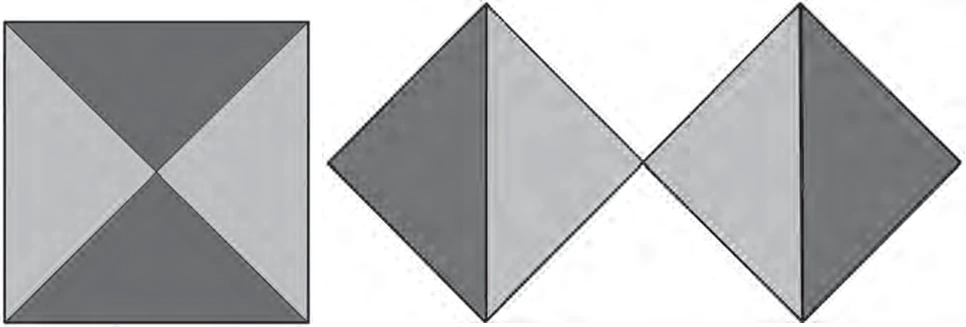

5º ano · 45 min · P5-04
Dobre a área do quadrado sem dobrar o lado
Construir um quadrado sobre uma diagonal e justificar o dobro da área com peças iguais.
Antes de começar
Prontidão: Contar unidades quadradas; identificar quadrado e diagonal.
Materiais: Papel quadriculado, quatro triângulos retângulos isósceles congruentes, fita.
Divida em sessões menores se necessário. Um adulto deve manusear ferramentas pontiagudas; peças prontas, descrições orais e contornos são alternativas válidas.
Ideia de ensino
Corte dois quadrados de 4 cm por uma diagonal cada. Os quatro triângulos retângulos isósceles têm área de 8 cm² cada. Junte seus vértices de ângulo reto num centro; as hipotenusas delimitam um quadrado maior. Sua área é 4 × 8 = 32 cm², o dobro de 16 cm². Esse caso prepara um teorema geral posterior; não demonstra todos os triângulos retângulos.
Observe os diagramas do livro

Acompanhe as mesmas quatro peças nas duas disposições. A área do quadrado grande é a soma das áreas dos dois menores. É o caso do triângulo retângulo isósceles; não demonstra o teorema para todo triângulo retângulo.
Siga as medidas escritas e as etapas da aula; estas ilustrações redimensionadas não são moldes para medir.
Ritmo da aula
- 5 min · Preveja como fazer um quadrado com o dobro da área. Registre a hipótese de dobrar o lado.
- 15 min · Faça dois quadrados de 4 por 4 e corte uma diagonal de cada. Identifique as quatro peças iguais e compare suas áreas.
- 20 min · Junte os quatro ângulos retos num centro, com catetos de 4 cm encostados. Confira ausência de lacunas ou sobreposição. Trace o quadrado externo e compare com um original e um de 8 por 8.
- 5 min · Explique por que dobrar o lado não funciona; repita o raciocínio na próxima semana com um quadrado de 3 cm.
Tente antes de revelar a resposta
Qual área é o dobro de 16 cm²?
Revelar raciocínio e resposta
32 cm²; quatro triângulos de 8 cm² a preenchem.
Qual é a área de um quadrado de lado 8 cm?
Revelar raciocínio e resposta
64 cm², quatro vezes a área do quadrado de 4 cm.
Um quadrado tem lado 3 cm. Qual é a área do quadrado sobre sua diagonal?
Revelar raciocínio e resposta
18 cm²: o dobro de 3 × 3 = 9 cm².
O que observar
Confira conservação das quatro peças e comparação oral das áreas.
Pergunte: O que mudou? O que permaneceu? Como conferir? Avalie desenho, modelo e explicação separadamente do capricho.
Apoio
Forneça peças recortadas; deixe o estudante orientar a montagem de outra pessoa.
Amplie quando houver prontidão
Depois, ligue o lado de 4√2 cm a 4² + 4²; mantenha primeiro a experiência de áreas.
Conexões
Quadrados encaixados pelos pontos médios → Continue no curso existente · G7-08 → Continue no curso existente · G7-09
Fonte e lacuna abordada
Acrescenta uma ponte vivencial pelo quadrado da diagonal antes do teorema geral de Pitágoras.
Ernst Schuberth · Geometry Lessons in the Waldorf School, Volume 2 · PDF 82–84. Estímulo temático; atividades, exemplos e modelos esquemáticos são originais. Diagramas adicionais do livro são creditados individualmente.
Ron Jarman · Teaching Waldorf Mathematics in Grades 1–8 · Markdown fornecido de 249 páginas, marcadores do PDF capturado 92–94. As seções de geometria e a visão geral por ano foram revistas diretamente. As referências são desta transcrição, não das páginas Kindle nem da transcrição anterior de 300 páginas. O OCR pode danificar fórmulas e omitir figuras; os exemplos aqui são originais e conferidos independentemente.
Atividades originais; a sequência por ano é flexível. Desenhos e explicações precisam de avaliação humana. Estas páginas não salvam progresso.